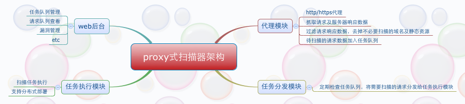

如何实现一个基于代理的web扫描器¶
概述¶
Note
在WEB业务上线前，QA测试阶段，可将QA的浏览器代理设到一个指定的代理中或测试pc拨入特定的vpn中，QA在测试功能的同时， 安全测试也会在后台同步完成，其好处不言而喻。
该类扫描器常见的有2种：
- 代理式
- vpn + 透明代理
Note
本文只讲第1种，第2种的实现方式稍麻烦一些，一天半天的时间内写不出来，留在下篇文章中写。
架构说明¶
proxy模块的实现¶
用户请求数据抓取¶
proxy模块是在开源项目 https://github.com/senko/tornado-proxy 的基础上改的，将用户的请求与服务器的响应数据过滤后存入了mongodb中。
我新加的代码在30 - 38行之间。
1 2 3 4 5 6 7 8 9 10 11 12 13 14 15 16 17 18 19 20 21 22 23 24 25 26 27 28 29 30 31 32 33 34 35 36 37 38 39 40 41 42 43 44 45 46 47 48 49 50 51 52 53 54 55 56 57 58 59 | class ProxyHandler(tornado.web.RequestHandler):
SUPPORTED_METHODS = ['GET', 'POST', 'CONNECT']
@tornado.web.asynchronous
def get(self):
url_info = dict(
method=self.request.method,
url=self.request.uri
)
self.request_info = None
def handle_response(response):
if (response.error and not
isinstance(response.error, tornado.httpclient.HTTPError)):
self.set_status(500)
self.write('Internal server error:\n' + str(response.error))
else:
self.set_status(response.code)
for header in ('Date', 'Cache-Control', 'Server','Content-Type', 'Location'):
v = response.headers.get(header)
if v:
self.set_header(header, v)
v = response.headers.get_list('Set-Cookie')
if v:
for i in v:
self.add_header('Set-Cookie', i)
if response.body:
self.write(response.body)
# Insert http request and response into mongodb
if self.application.scan:
url = url_info.get('url')
url_filter = UrlFilter(url)
if url_filter.filter():
http_info = HttpInfo(url_info, self.request_info, response)
values = http_info.get_info()
mongodb = Mongodb(db_info)
mongodb.insert(values)
self.finish()
body = self.request.body
self.request_info = self.request
if not body:
body = None
try:
fetch_request(
self.request.uri, handle_response,
method=self.request.method, body=body,
headers=self.request.headers, follow_redirects=False,
allow_nonstandard_methods=True)
except tornado.httpclient.HTTPError as e:
if hasattr(e, 'response') and e.response:
handle_response(e.response)
else:
self.set_status(500)
self.write('Internal server error:\n' + str(e))
self.finish()
|
程序使用方法¶
Note
代码比较占篇幅，这里不贴了，请参考我的github： https://github.com/netxfly/passive_scan 。
proxy有2个参数:
- port，端口不指定的话，默认为8088
- scan，scan默认为true，表示会将用户信息入库，如果单纯只想作为一个代理，传入false即可。

任务分发模块¶
Note
任务分发模块会定期检查mongodb中的待扫描列表，根据status字段判断是否有扫描任务，如果有扫描任务就分发给celery的worker执行。
- status = 0，表示待扫描
- status = 1，表示正在扫描
- status = 2，表示扫描已完成
1 2 3 4 5 6 7 8 9 10 11 12 13 14 15 16 17 18 19 20 21 22 23 24 25 26 27 28 29 30 31 32 33 34 35 36 37 38 39 40 41 42 43 44 45 46 47 48 49 50 51 52 53 54 55 56 57 58 59 60 61 62 63 64 65 66 67 68 69 70 71 72 73 74 75 76 77 78 79 80 81 82 83 84 85 86 87 | # -*- coding: utf-8 -*-
__author__ = 'Hartnett'
import time
from pprint import pprint
import pymongo
from bson.objectid import ObjectId
from config import db_info
from scan_tasks import scan
class Scheduler(object):
def __init__(self, interval=5):
self.interval = interval
self.db_info = db_info
# connect to database
self.client = pymongo.MongoClient(self.db_info.get('host'), self.db_info.get('port'))
self.client.security_detect.authenticate(
self.db_info.get('username'),
self.db_info.get('password'),
source='passive_scan'
)
self.db = self.client["passive_scan"]
self.collection = self.db['url_info']
def _get_task(self):
task_id = None
task_info = None
tasks = self.collection.find({'status' : 0}).sort("_id", pymongo.ASCENDING).limit(1)
for task in tasks:
url = task.get('url')
task_id = task.get('_id')
domain = task.get('domain')
method = task.get('request').get('method')
request_data = task.get('request').get('request_data')
user_agent = task.get('request').get('headers').get('User-Agent')
cookies = task.get('request').get('headers').get('Cookie')
task_info = dict(
task_id=task_id,
url=url,
domain=domain,
method=method,
request_data=request_data,
user_agent=user_agent,
cookies=cookies
)
print("task_id : %s, \ntask_info:") % task_id
pprint(task_info)
return task_id, task_info
# set task checking now
def _set_checking(self, task_id):
self.collection.update({'_id': ObjectId(task_id)}, {"$set" : {'status' : 1}})
# set task checked
def _set_checked(self, task_id):
self.collection.update({'_id': ObjectId(task_id)}, {"$set" : {'status' : 2}})
# distribution task
def distribution_task(self):
task_id, task_info = self._get_task()
print "get scan task done, sleep %s second." % self.interval
if task_id is not None:
self._set_checking(ObjectId(task_id))
url = task_info.get('url')
domain = task_info.get('domain')
method=task_info.get('method')
request_data=task_info.get('request_data')
user_agent = task_info.get('user_agent')
cookies = task_info.get('cookies')
scan.apply_async((task_id,url,domain,method,request_data,user_agent,cookies,))
self._set_checked(ObjectId(task_id))
def run(self):
while True:
self.distribution_task()
time.sleep(self.interval)
if __name__ == '__main__':
scheduler = Scheduler()
scheduler.run()
|

扫描任务执行模块¶
Note
任务扫描模块是利用celery实现分布式扫描的，可以将worker部署在多台服务器中，后端的扫描器大家根据实现情况加，比如wvs，arachni，wvs或自己写的扫描器 ，这篇文章的重点在于代理扫描，我图方便就用了 arachni 。
1 2 3 4 5 6 7 8 9 10 11 12 13 14 15 16 17 18 19 20 21 22 23 24 25 26 27 28 29 | # -*- coding:utf8 -*-
__author__ = 'hartnett'
from celery import Celery
from arachni import arachni_console
from config import BACKEND_URL, BROKER_URL, db_info
from helper import Reporter, PassiveReport, TaskStatus
app = Celery('task', backend=BACKEND_URL, broker=BROKER_URL)
# scanning url task
# --------------------------------------------------------------------
@app.task
def scan(task_id, task_url,domain,method,request_data,user_agent,cookies):
if task_url:
print "start to scan %s, task_id: %s" % (task_url, task_id)
scanner = arachni_console.Arachni_Console(task_url, user_agent, cookies,page_limit=1)
report = scanner.get_report()
if report:
reporter = Reporter(report)
value = reporter.get_value()
if value:
# 如果存在漏洞则记录到数据库中
scan_report = PassiveReport(db_info, value)
scan_report.report()
task_status = TaskStatus(db_info)
# 将状态设为已扫描
task_status.set_checked(task_id)
|
web管理后台¶
Note
实现这个demo用了半天时间，写web后台还要处理前端展示，比较麻烦，所以没写，只讲下基于proxy的扫描器的实现思路。